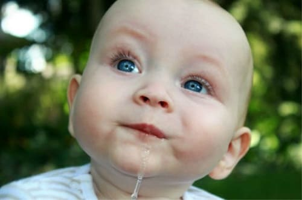
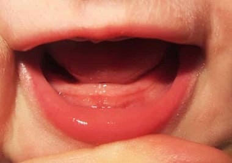
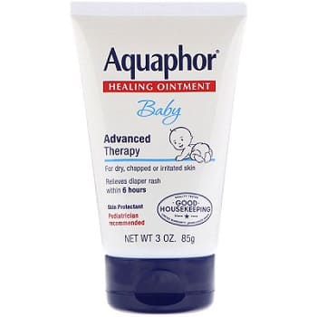

Как только зубы начинают прорезаться сквозь десны, включается кран со слюной. На самом деле, любое раздражение во рту (например, зубная боль, стоматит или прорезывание зубов) вызывает увеличение выработки слюны. В норме существует баланс между секрецией и проглатыванием слюны. Но некоторые младенцы производят слюну быстрее, чем успевают ее сглатывать, что приводит к слюнотечению — младенец начинает «пускать слюни».
Звуки, издаваемые из-за обилия слюны. Когда у ребенка период, который мы называем «слюнявые дни» (обычно непосредственно перед прорезыванием зубов), ожидайте целую симфонию гортанных звуков. Когда лужи слюны собираются позади горла, воздух, проходящий через них, производит множество гортанных шумов, которые мы классифицируем так:
• «журчание» для шумов позади горла;
• «шморганье» — комбинация фырканья и бульканья кажется исходящей из спинки носа;
• «бульканье» — звук отрыжки, походящей через слюну.
Хотя избыточное слюноотделение может вызывать необычные звуки и появление сыпи, слюна готовит кишечник к перевариванию твердой пищи. Вот каким образом:
• Слюна содержит вещество, называемое эпидермальным фактором роста, которое способствует созреванию слизистой кишечника.
• Слюна нейтрализует желудочную кислоту, заживляет и смазывает слизистую пищевода, которая могла пострадать из-за частых отрыжек и забросов желудочной кислоты.
• В слюне есть ферменты, которые способствуют частичному перевариванию твердой пищи прежде, чем она попадет в кишечник.

ЧТО ДЕЛАТЬ
Раз уж слюна так важна для организма, вот несколько способов управиться с некоторыми неприятностями, доставляемыми избыточным слюноотделением:
СОВЕТ ДОКТОРОВ СИРС: СЛЮНЯВЫЙ «НАСМОРК» Избыточная слюна, скапливающаяся в задней части горла, может вызывать кашель, напоминающий кашель при насморке. При этом, если вы приложите руку к спине малыша на уровне груди, вы почувствуете и услышите хрипы, но они исходят не из груди, их издает воздух, проходящий через лужицы слюны, скопившиеся позади горла. Это не настоящий насморк (слюна вообще редко попадает в нос), а нормальные горловые звуки в слюнявые дни. В то время как насморк более шумно проявляется ночью, слюнные хрипы стихают, так как выработка слюны во сне уменьшается. |
Предупредите образование сыпи из-за слюнотечения. Сыпь при избыточном слюноотделении похожа на опрелости, только на щеках. Когда пухлые щечки трутся о пропитанную слюной простыню — ждите скорого появления сыпи. Аккуратно смойте избыток слюны с кожи и промокните. Перед сном нанесите защитный крем, например, Aquaphor или Soothe and Heal, чтобы слюна не контактировала с кожей.

Приготовьтесь к «слюнявому стулу». Другая неприятность этого мокрого периода — то, что реакция на слюну одинакова что со стороны лица, что со стороны попы. Слюна — естественное слабительное, так что готовьтесь к более жидкому стулу и большим опрелостям в ближайшее время. Нанесите на кожу вокруг заднего прохода младенца тот же защитный крем, что и на лицо. Как только зубы прорежутся и глотательный механизм созреет достаточно, чтобы управиться со всей вырабатываемой слюной, пускание слюней сойдет на нет.
Здоровье ребенка от докторов Сирс / Сирс У. и др.